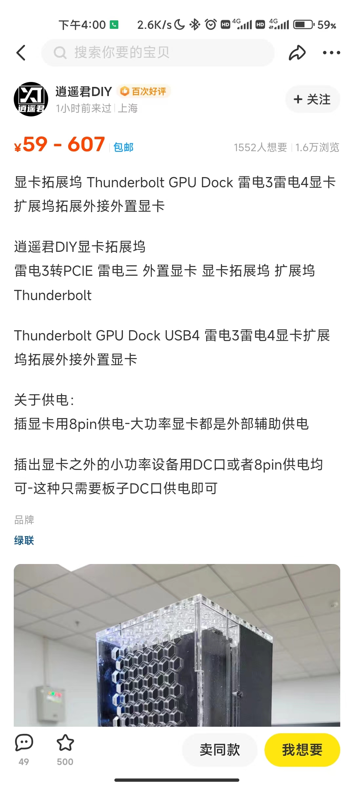

Mac mini 2018 装显卡坞的折腾之旅
起因
- 卡顿
- 玩 android 模拟器有点卡
- 用网页云游戏玩的也卡
- 打开自家开发的 CRM 前端页面也卡
- 无法跑 AI 模型
- 简单的
- 进而怒从胆边生，决定购置一款显卡，但是我是 Mac mini, 只能选择外接显卡的方式了。
- 凭借 CS （叉腰）专业，决定先买一款显卡坞，刚好了解到 B 站有 Up 主自制了一款显卡坞，所以决定入手一试。
- 需要的东西
- 显卡
- 显卡扩展坞
- 电源
- 24pin短接器
- 拼多多一搜就有，3-4￥
- 可以用口罩的铁丝、曲别针等类似铁丝线的东西。
- 步骤
- 选显卡
- 下面的步骤告诉你怎么选。
- 选电源
- 注意选好电源尺寸（ATX/ M ATX … ）
- 根据显卡来挑选应该具有显卡
- 选外饰
- 显卡坞如果没有相关的盒子可以考虑买个M ITX 机箱来存放，粗放一点的可以放开放式机箱。
- 手动装配
- 选显卡
- 目标
- 无 windows 需求 & 能够在 Mac mini 上稳定运行模拟器等相关软件。
- 有 windows 需求的，博主没实操过，不知道。
经过
选显卡坞
- 市面上有很多款显卡坞，有的支持 1660X 以上的，也有的不支持的。
- 我大概扫了一眼，觉得稍微好看一点（装逼）的都要 2k 左右，实在不符合我的人设（贫穷），所以我看到
逍遥君自制的 这款显卡坞，我才觉得是那么亲切（便宜），性能还挺高，损耗也比较少（我没实测，我不在乎损耗，大概上感觉不会比贵东西差多少），按照逍遥君的说法是，比一般的显卡坞更强。 - 毫无疑问，就它了， 价格好像是才 600￥，配件包括，显卡坞，支架，雷电线。
选显卡
AMD RX 580 2304 SP ! 一定要 2304 SP
过程
- 选对了显卡可以免驱，免折腾，免第三方驱动。
- 选错显卡毁一生~
- 强调注意 RX 580 的 流处理器问题（仅支持满血版 即 2304 SP），闲鱼大概 260 左右，非满血版 200 左右。
- RX 580 默认都是矿卡 （其他请参考更多）
雷雳 3 一体式 eGPU 产品
- Blackmagic eGPU 和 Blackmagic eGPU Pro
- Sonnet Radeon RX 570 eGFX Breakaway Puck
- Sonnet Radeon RX 560 eGFX Breakaway Puck
- [博主自选] Gigabyte RX 580 Gaming Box
AMD 系列
-
Radeon RX 6800、 6800XT、6900XT
- 推荐用于上述图形卡的雷雳 3 扩展配件：
- Sonnet eGFX Breakaway Box 650W
- Razer Core X4
- 推荐用于上述图形卡的雷雳 3 扩展配件：
-
AMD Radeon RX 6600 XT
- 系统要求
- MacOS Monterey 12.1 或者以上
- 推荐用于以下图形卡的雷雳 3 扩展配件： - Sonnet eGFX Breakaway Box 550W - Razer Core X
- 系统要求
-
便宜但默认矿卡系列，
- AMD Radeon RX 470、RX 480、RX 570、RX 580 和 Radeon Pro WX 7100
- 这些图形卡基于 AMD Polaris 架构。
- 推荐的图形卡包括 Sapphire Pulse 系列和 AMD WX 系列。
- 支持但是注意 RX 580
- 有流处理器之分，2304 SP & 2048 SP.
- 据说 Mac mini 2018 是不支持 2048 SP（别问我为什么知道 T_T ）
- AMD Radeon RX 470、RX 480、RX 570、RX 580 和 Radeon Pro WX 7100
- 还有更多，请查看连接 苹果官方原文 Mac mini 2018（或 inter CPU 支持的显卡）
结果
- 待完结结果图（其实是好评图）

引用
- 技术UP花费三个月，自制B站最快雷电显卡坞_哔哩哔哩_bilibili
- 逍遥君DIY的个人空间_哔哩哔哩_bilibili
- 苹果官方原文 Mac mini 2018（或 inter CPU 支持的显卡）
- 装了显卡后如何 OS 上如何使用)
obsidian://open?vault=icarus-go.github.io&file=content%2Fmacosx%2Finstall